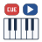

Inaccurate Piano MIDI
Cue YouTube from your instrument
Checking page…
MIDI events and video position are processed locally. Chrome stores your profile, custom mappings, and reconnect preference.
No MIDI inputs connected.
Custom Mapping
Capture a note or CC press. The first capture copies the selected profile.
Set Cue Point
Jump & Play
Cue point: 0:00
Open a YouTube watch page to begin.